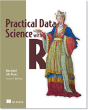

My Favorites
Books: Catch 22, Moby Dick, Roadside Picnic, “A=B”.
Writers: Karel Capek, Stanislaw Lem, Chris Ware.
Music: Water Music, Debussy, Skinny Puppy, Shriekback.
Movies: The Thing, Kagemusha, Dark Star.
Hobbies: Photography, Collecting Fountain Pens, Reading, Classical Music, Mathematical Hacking, Video Games, Hiking.
My Background
Undergraduate: Mathematics, U.C. Berkeley.
Ph.D.: Computer Science, Carnegie Mellon.
Where I work: Win-Vector LLC.
What I do: I produce applied research, prototyping and training in information extraction, algorithms and data-mining for web-scale businesses, hedge funds and start ups. Right now I do this as a consultant at Win-Vector LLC. Earlier I have managed a research group at Shopping.com, performed research in biotech and been a trader in a hedge-fund. A run-down can be found on my LinkedIn profile.
My Blog: http://www.win-vector.com/blog/ (RSS http://www.win-vector.com/blog/feed/ ).
Please check out our video course and book!

Associations:
American Mathematical Society
CMU Alumni Society
Mathematical Association of America
Rotary
Sigma XI, The Scientific Research Society